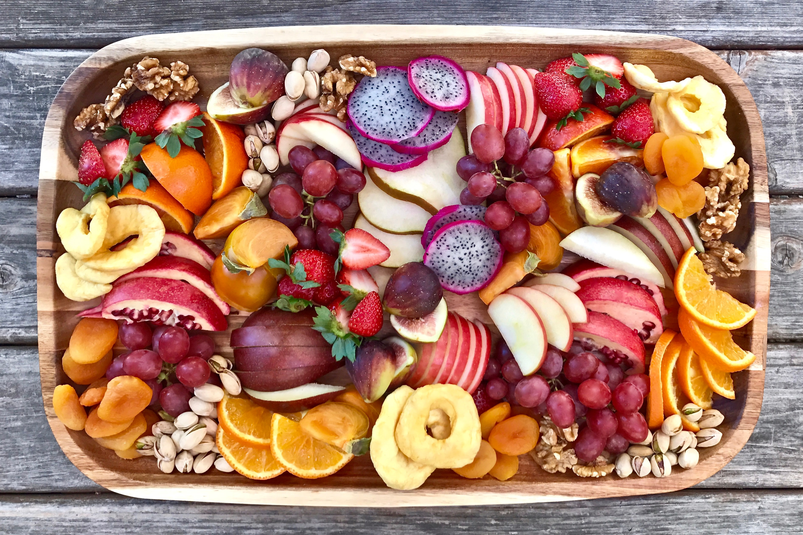

더블업s
더블업's Goal is "Life is Healing!"
더블업은 어떤 고객 가치를 제공하는가?
더블업은 건강하면서 맛있고 재미있는 경험을 제공한다.
과학과 기술의 발전으로 평균수명이 늘어났고 그에 따라 더 오래살고 싶다는 욕구와 사는 동안 건강하게 살고 싶다라는 욕망를 갖고 있다. 하지만 건강은 건강할 때 지켜야 하는 것이다. 즉 젊었을 때부터 건강 관리를 해야 하는데 젊은 사람들은 아직 건강에 대해 관심을 갖기 전이다. 이 사람들은 즐거운거 행복하게 하는 것에 관심을 갖기 때문에 이 젊은 사람들의 입을 즐겁게 하고 운동하는 시간을 즐기게 해서 건강한 라이프스타일을 창출 할 수 있도록 도움을 주자는 아이디어에서 착안하게 되었다.
 
따라서 더블업이 제공하는 서비스는 고객들이 건강 접근성을 획기적으로 높일 것이다.